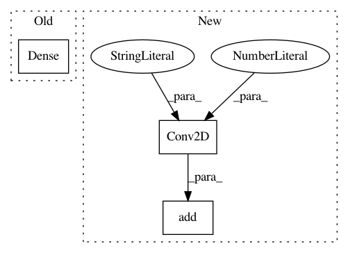

4edcbc432d59b73cf79dd9a7364b42a1dafd1eff,infogan/infogan.py,INFOGAN,build_discriminator,#INFOGAN#,95
Before Change
features = model(img)
validity = Dense(1, activation="sigmoid")(features)
def linmax(x):
return K.maximum(x, -16)
After Change
model.add(LeakyReLU(alpha=0.2))
model.add(Dropout(0.25))
model.add(BatchNormalization(momentum=0.8))
model.add(Conv2D(256, kernel_size=3, strides=2, padding="same"))
model.add(LeakyReLU(alpha=0.2))
model.add(Dropout(0.25))
model.add(BatchNormalization(momentum=0.8))
In pattern: SUPERPATTERN
Frequency: 3
Non-data size: 3
Instances
Project Name: eriklindernoren/Keras-GAN
Commit Name: 4edcbc432d59b73cf79dd9a7364b42a1dafd1eff
Time: 2018-01-21
Author: eriklindernoren@gmail.com
File Name: infogan/infogan.py
Class Name: INFOGAN
Method Name: build_discriminator
Project Name: eriklindernoren/Keras-GAN
Commit Name: 4edcbc432d59b73cf79dd9a7364b42a1dafd1eff
Time: 2018-01-21
Author: eriklindernoren@gmail.com
File Name: infogan/infogan.py
Class Name: INFOGAN
Method Name: build_generator
Project Name: modAL-python/modAL
Commit Name: b673a26860c1598e7ef66a301743a2ff1d96b61f
Time: 2018-04-16
Author: theodore.danka@gmail.com
File Name: examples/keras_integration.py
Class Name:
Method Name: create_keras_model